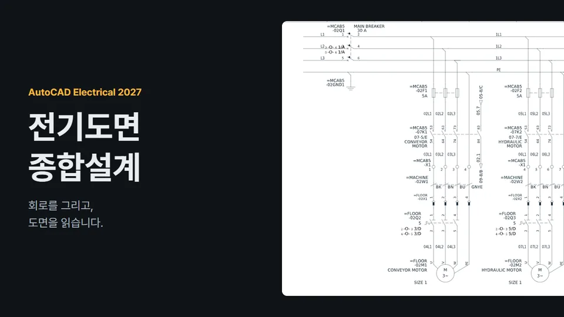
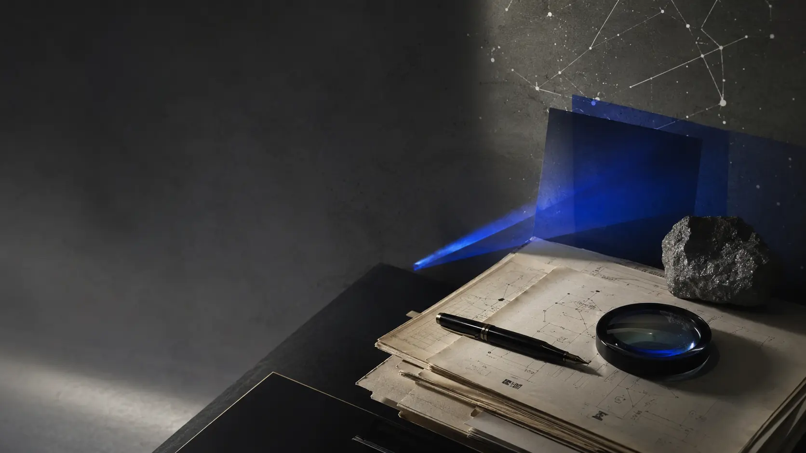
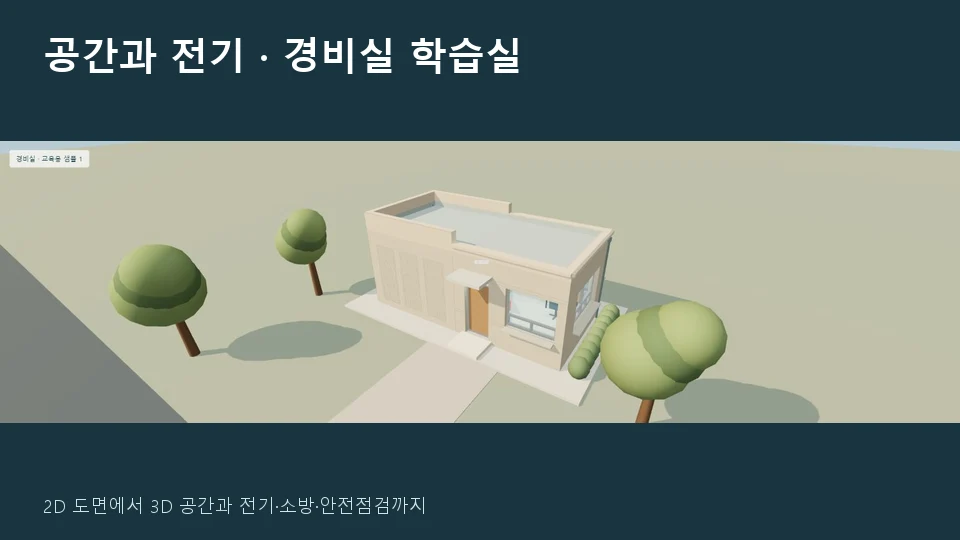

전기도면 종합설계
회로를 직접 그리고 실제 컨베이어 도면을 읽으며, AutoCAD Electrical 전기도면 설계를 혼자서 익힙니다.

교수 · 저자 · 창작자 · 시스템 설계자Professor · Author · Creator · System Designer
AI에게 판단을 맡기지 않고,AI와 함께 메시지의 몸을 만드는 사람.I do not hand judgment to AI.I work with AI to give messages a body.
미디어융합 전공 공학박사 김준호는 음악, 영상, 출판, 제품, 연구와 사회적 가치를 하나의 인과관계로 연결합니다.Joonho Kim, Ph.D. in media convergence, connects music, video, publishing, products, research, and social value through one causal body.
미디어는 메시지의 몸이다.Media is the body of the message.
홈은 모든 내용을 쌓아놓는 곳이 아니라 각 관계로 들어가는 문입니다.The home page is a set of doors into distinct relationships, not a pile of every detail.
만드는 행위가 어떤 관계와 태도를 갖는지 보여줍니다.How acts of making embody relation and attitude.
생각과 주장이 기록과 증거의 몸을 갖습니다.Ideas and claims take on bodies of record and evidence.
기술과 창작이 나눔의 거리를 줄입니다.Technology and creation shorten the distance to sharing.
판단의 기준과 최종 책임이 한 사람의 태도를 드러냅니다.Criteria for judgment and final responsibility reveal the person behind the work.
노래, 슬라이드, 화면과 이야기가 배포로 끝나지 않고 다음 창작을 바꾸는 기억으로 축적됩니다.Songs, slides, screens, and stories accumulate as memory that changes the next creation.

회로를 직접 그리고 실제 컨베이어 도면을 읽으며, AutoCAD Electrical 전기도면 설계를 혼자서 익힙니다.
돈을 미리 내고 떠난 자리마다 별이 뜬다. 낸 금화가 별이 되어 은하수를 이루는 미리내맨 주제곡 뮤직비디오와 그 제작 과정.
노래가 용이 되고, 목소리가 겨울을 밀어낸다. 겨울은 그림이, 불은 음악이 그리는 4분 12초 메탈 뮤직비디오와 그 제작 과정.
단문 인과체인과 코드 애니메이션, 원화와 영상, 제주 새소리의 제작 실험을 따라 움직임과 감정의 연결을 살핀다.

건축부터 구조·전기·소방·계산·안전점검까지, 전체 프로세스를 하나의 모델 위에서 통합적으로 경험하고 학습합니다.
드론·FPV 촬영 100개 사례를 장면 읽기·촬영 설계·원본 영상·번역한 제작 노트로 읽고, 단문 인과 체인으로 Kling 프롬프트를 만들어 직접 시험해 보는 사례 도감입니다.